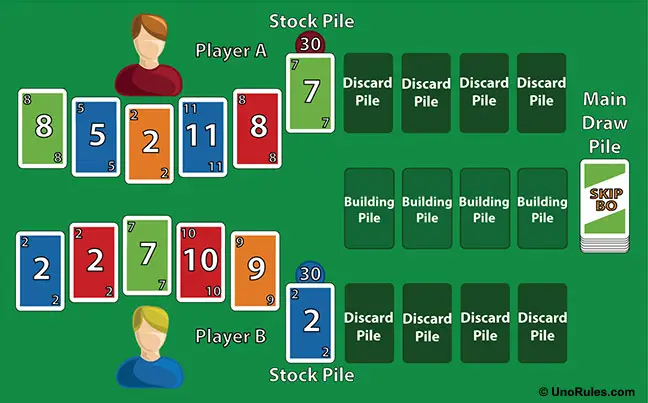

"Skip-Bo" – это захватывающая карточная игра, цель которой – избавиться от всех карт в своей стопке. Игроки по очереди выкладывают карты на общие стопки по возрастанию, начиная с единицы и заканчивая двенадцатью. Уникальные "Skip-Bo" карты служат джокерами и могут заменять любую другую карту. В нашем онлайн-варианте игры, мы сохраняем дух оригинала, предоставляя игрокам возможность насладиться игрой в любое время и в любом месте, соревнуясь с друзьями или случайными оппонентами со всего мира.
Онлайн-версия "Skip-Bo" ориентирована на широкий круг игроков всех возрастов. Она идеально подходит как для тех, кто уже знаком с игрой в её классическом виде, так и для новичков, желающих изучить новую стратегическую игру. Простые правила и интерактивный геймплей делают "Skip-Bo" привлекательным для семейного времяпрепровождения, а также для онлайн-общения и соревнований с друзьями и случайными оппонентами. Игра также привлекает любителей головоломок и карточных игр, предлагая им увлекательные и интеллектуальные вызовы.